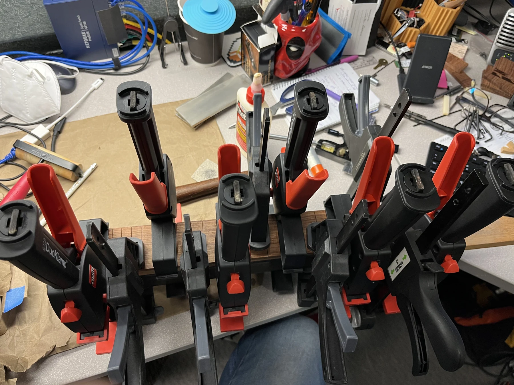

Custom inlays
and neck work
in Los Angeles.
I’m Justin Benson, a luthier in North Hollywood working on custom fretboard inlays, fretwork, and neck projects. You’ll find examples here, with more of the process, experiments, and occasional questionable fixture on Instagram.
Selected work

About the workshop
Moon & Pearl is my small, veteran-owned workshop, where I take on projects around my day job. My current focus is custom fretboard inlays, fretwork, and other neck projects.
I also make jigs and adapt tools for the work, which explains some of the less recognizable things on the bench.
Services & pricing
- Restring and cleanup
- $30
- Guitar or bass setupRelief, action, intonation where adjustable, pickup height, restring and basic cleaning.
- $100
- Fret level, crown and polishIncludes a standard setup.
- From $225
- Sharp fret end dressing
- From $75
- Nut replacementPremade nut fitting from $85, plus the nut; setup separate. Custom bone nut with standard setup from $200, including the bone blank.
- From $85
- Electronics and pickup installationJack, pot or switch replacement from $45. Standard electric pickup installation: $60 for one or $100 for a pair. Parts extra.
- From $45
- Structural repairs and restoration
- Individual quote
Strings and parts are extra unless specified. Prices are a guide; I’ll confirm an estimate after inspecting your instrument and before starting work.
Floyd Rose and other double-locking tremolo systems are not serviced.
Have a project
in mind?
For setups, repairs, custom inlays or neck work, tell me about your instrument and what you’d like done. I’m not accepting complete guitar commissions at the moment.